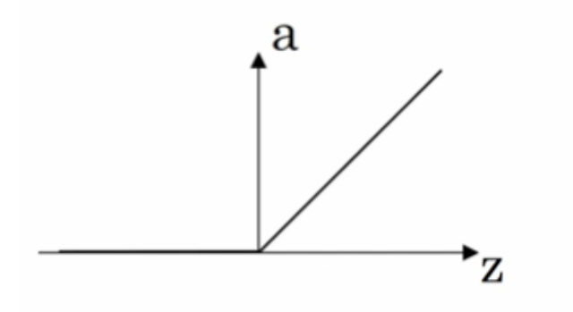
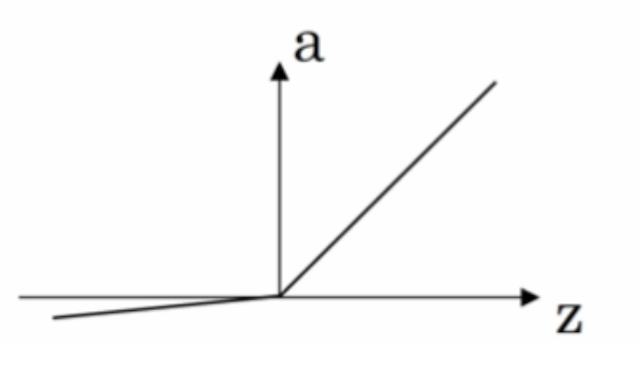

3.1 卷积神经网络(CNN)简介
学习目标
- 目标
- 了解线性网络以及多层网络模型缺陷
- 知道为什么需要非线性激活函数
- 了解为什么需要卷积神经网络
- 应用
- 无
多层的线性网络和单层的线性网络没有区别，而且线性模型的能够解决的问题也是有限的
3.1.1 更复杂抽象的数据
一个单隐含层有更多的神经元，就能捕捉更多的特征。而且有更多隐层，意味着能从数据集中提取更多复杂的结构。

- 增加网络深度

- 使用非线性激活函数

3.1.2 激活函数的选择
涉及到网络的优化时候，会有不同的激活函数选择有一个问题是神经网络的隐藏层和输出单元用什么激活函数。之前我们都是选用 sigmoid 函数，但有时其他函数的效果会好得多，大多数通过实践得来，没有很好的解释性。
可供选用的激活函数有：
- tanh 函数（the hyperbolic tangent function，双曲正切函数）：

效果比 sigmoid 函数好,因为函数输出介于 -1 和 1 之间。
注 :tanh 函数存在和 sigmoid 函数一样的缺点：当 z 趋紧无穷大（或无穷小），导数的梯度（即函数的斜率）就趋紧于 0，这使得梯度算法的速度会减慢。
- ReLU 函数（the rectified linear unit，修正线性单元）

当 z > 0 时，梯度始终为 1，从而提高神经网络基于梯度算法的运算速度，收敛速度远大于 sigmoid 和 tanh。然而当 z < 0 时，梯度一直为 0，但是实际的运用中，该缺陷的影响不是很大。
Leaky ReLU（带泄漏的 ReLU）：

Leaky ReLU 保证在 z < 0 的时候，梯度仍然不为 0。理论上来说，Leaky ReLU 有 ReLU 的所有优点，但在实际操作中没有证明总是好于 ReLU，因此不常用。
3.1.2.1 为什么需要非线性的激活函数
使用线性激活函数和不使用激活函数、直接使用 Logistic 回归没有区别，那么无论神经网络有多少层，输出都是输入的线性组合，与没有隐藏层效果相当，就成了最原始的感知器了。

3.1.2.2 更多发展
更多神经元 + 更深的网络 = 更复杂的抽象。这也是简单的神经元如何变得更聪明，并在图像识别、围棋这些特定问题上表现如此之好的原因。
- 神经网络拓展介绍
- 神经网络的种类
- 基础神经网络：线性神经网络，BP神经网络，Hopfield神经网络等
- 进阶神经网络：玻尔兹曼机，受限玻尔兹曼机，递归神经网络等
- 深度神经网络：深度置信网络，卷积神经网络，循环神经网络，LSTM网络等
3.1.3 为什么需要卷积神经网络
图像特征数量对神经网络效果压力
假设下图是一图片大小为28 * 28 的黑白图片时候，每一个像素点只有一个值（单通道）。那么总的数值个数为 784个特征。

那现在这张图片是彩色的，那么彩色图片由RGB三通道组成，也就意味着总的数值有28 28 3 = 2352个值。

从上面我们得到一张图片的输入是2352个特征值，即神经网路当中与若干个神经元连接，假设第一个隐层是10个神经元，那么也就是23520个权重参数。
如果图片再大一些呢，假设图片为1000 1000 3，那么总共有3百万数值，同样接入10个神经元，那么就是3千万个权重参数。这样的参数大小，神经网络参数更新需要大量的计算不说，也很难达到更好的效果，大家就不倾向于使用多层神经网络了。
所以就有了卷积神经网络的流行，那么卷积神经网络为什么大家会选择它。那么先来介绍感受野以及边缘检测的概念。
在计算机视觉领域，通常要做的就是指用机器程序替代人眼对目标图像进行识别等。那么神经网络也好还是卷积神经网络其实都是上个世纪就有的算法，只是近些年来电脑的计算能力已非当年的那种计算水平，同时现在的训练数据很多，于是神经网络的相关算法又重新流行起来，因此卷积神经网络也一样流行。
- 1974年，Paul Werbos提出了误差反向传导来训练人工神经网络，使得训练多层神经网络成为可能。
- 1979年，Kunihiko Fukushima（福岛邦彦），提出了Neocognitron， 卷积、池化的概念基本形成。
- 1986年，Geoffrey Hinton与人合著了一篇论文：Learning representations by back-propagation errors。
- 1989年，Yann LeCun提出了一种用反向传导进行更新的卷积神经网络，称为LeNet。
- 1998年，Yann LeCun改进了原来的卷积网络，LeNet-5。
3.1.2 感受野
1962年Hubel和Wiesel通过对猫视觉皮层细胞的研究，提出了感受野(receptive field)的概念，Fukushima基于感受野概念提出的神经认知机(neocognitron)可以看作是卷积神经网络的第一个实现网络。
单个感受器与许多感觉神经纤维相联系，感觉信息是通过许多感受神经纤维发放总和性的空间与时间类型不同的冲动，相当于经过编码来传递。

3.1.4 边缘检测
为了能够用更少的参数，检测出更多的信息，基于上面的感受野思想。通常神经网络需要检测出物体最明显的垂直和水平边缘来区分物体。比如

看一个列子，一个 6×6的图像卷积与一个3×3的过滤器（Filter or kenel）进行卷积运算（符号为 ）， 也可能是矩阵乘法所以通常特别指定是卷积的时候代表卷积意思。
- 相当于将 Filter 放在Image 上，从左到右、从上到下地（默认一个像素）移动过整个Image，分别计算 ImageImage 被 Filter 盖住的部分与 Filter的逐元素乘积的和

在这个6×6 的图像中，左边一半像素的值全是 10，右边一半像素的值全是 0，中间是一条非常明显的垂直边缘。这个图像与过滤器卷积的结果中，中间两列的值都是 30，两边两列的值都是 0，即检测到了原 6×66×6 图像中的垂直边缘。
注：虽然看上去非常粗，是因为我们的图像太小，只有5个像素长、宽，所以最终得到结果看到的是两个像素位置，如果在一个500 x 500的图当中，就是一个竖直的边缘了。

随着深度学习的发展，我们需要检测更复杂的图像中的边缘，与其使用由人手工设计的过滤器，还可以将过滤器中的数值作为参数，通过反向传播来学习得到。算法可以根据实际数据来选择合适的检测目标，无论是检测水平边缘、垂直边缘还是其他角度的边缘，并习得图像的低层特征。